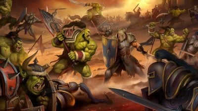

Сеттинг

Сеттинг всесвіту витриманий у стилі фентезі з елементами стимпанку, європейської культури та деяких елементів східної культури. У ньому представлені кілька планет-світів: Азерот, головне місце дії і рідний світ людей, він включає такі регіони як Східні королівства, Калімдор, Нордскол, Пандарію, Розколоті острови, Зандалар, Кул-Тірас та Драконські острови; а також світи Аргус та Дренор, який є рідним світом для орків. Історія всесвіту Warcraft описує в основному протистояння між двома протиборчими фракціями: Альянсом і Ордою та їх боротьбу з демонами Палаючий Легіон, нежиттю Плеті, драконом Смертокрилом, Стародавніми богами та іншими силами, що загрожують Азероту.
Ігри по всесвіту
Warcraft: Orcs & Humans
Warcraft II: Tides of Darkness
Warcraft II: Beyond the Dark Portal (дополнение)
Warcraft Adventures: Lord of the Clans (отменена)
Warcraft III: Reign of Chaos
Warcraft III: The Frozen Throne (дополнение)
Warcraft III: Reforged (ремейк)
World of Warcraft (ниже: дополнения)
World of Warcraft: The Burning Crusade
World of Warcraft: Wrath of the Lich King
World of Warcraft: Cataclysm
World of Warcraft: Mists of Pandaria
World of Warcraft: Warlords of Draenor
World of Warcraft: Legion
World of Warcraft: Battle for Azeroth
World of Warcraft: Shadowlands
World of Warcraft: Dragonflight
World of Warcraft: The War Within
Фільм
У травні 2006 року компанія Legendary Pictures набула права на зйомку фільму за мотивами серії Warcraft. Фільм присвячений першому зіткненню між людьми і орками, тобто подіям гри Warcraft: Orcs & Humans, при цьому включаючи і персонажів з Warcraft II: Tides of Darkness і показуючи обидві сторони конфлікту - Альянс і Орду - як героїв, не віддаючи переваги одній зі сторін.
BLIZARD